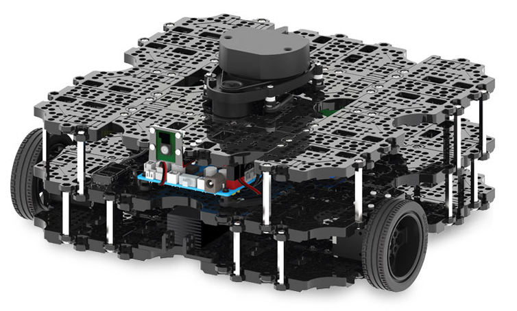

We all have someday or the other heard of turtlebots (if not below is a pic of Tutlebot3).

They can perform SLAM(a method to simultaneously map and localize the position of a robot in an environment), navigation and are good ground bots.
Likewise there exist many robots which operate in different environments - aerial, marine, manipulator, ... (you get the idea :D)
Two co-founders of ROS (Eric Berger and Keenan Wyrobek) who were then completing their PhDs at Stanford, observed that when new bots were built (this is more than a decade old tale) the same pattern repeated over and over by those setting out to innovate on robotics software. They spent 90 percent of their time rewriting code others had written before and building a prototype test-bed. Then the last 10 percent of their efforts, at most, were spent on innovation.
They decided upon creating an ecosystem in robotics which could be reusable and extensible, so that this process of recreating everything from scratch could be avoided and researchers could actually focus on creating and innovating. ROS (and PR1) was their solution to eliminate that massive amount of wasted time. In effect, they wanted to create The Linux for Robotics.
The two young co-founders met Scott Hassan. Scott wanted to enable the future entrepreneurs of the robotics industry with an open-source foundation and he led the research lab now famously known as Willow Garage. So it was that goal of creating an open source reusable code which led to the creation of ROS, Gazebo, MoveIt and interestingly OpenCV also got revived.
In 2012, Open Source Robotics Foundation (OSRF) was created and it officially overtook the responsibilities for future maintenance and development of ROS.
You can get a better overview of the origin by reading this article on ieee-spectrum written by one of the co-founders of ROS.
By the way this is the bot PR1 that they made back in 2006 and it still looks cool.
ROS is widely used across top R&D labs, industry and academia. It is sponsored by NASA, MATLAB, Amazon, NVIDIA, Qualcomm, DARPA, ARM and the list goes on and on 😊.
I think you get a rough estimate of how essential it is to learn ROS if you want to proceed in robotics.
Let’s delve a little into the structure of ROS to get a better understanding of how things are working in ROS. The components of core structure are:
Topics are named buses over which nodes exchange messages. Topics are intended for unidirectional, streaming communication. In general, nodes are not aware with whom they are communicating. Instead,
The publish / subscribe model is a very flexible communication model, but its many-to-many one-way transport is not appropriate for RPC request / reply interactions, which are often required in a distributed system. Request / reply is done via a Service, which is defined by a pair of messages: one for the request and one for the reply.
A node is a process that performs computation. Nodes are combined together into a graph and communicate with one another using streaming topics, RPC services, and the Parameter Server. These nodes are meant to operate at a fine-grained scale. A robot control system will usually comprise many nodes. For example, one node controls a laser range-finder, one Node controls the robot's wheel motors, one node performs localization, one node performs path planning, one node provides a graphical view of the system, and so on.
The ROS Master provides naming and registration services to the rest of the Nodes in the ROS system. It tracks publishers and subscribers to Topics as well as Services. The role of the master is to enable individual ROS nodes to locate one another. Once these nodes have located each other they communicate with each other peer-to-peer.
Configuration information in ROS is usually saved to the Parameter server. It is a collection of values that can be accessed upon request through the terminal, nodes or launch files. Parameters are intended to be fairly static, globally available values such as integers, floats, strings or bool values.
There are more than a dozen command line tools, the prominent ones are:
It is a tool for easily launching multiple ROS nodes locally and remotely via SSH, as well as setting parameters on the Parameter Server.
The rosbash package contains some useful bash functions and adds tab-completion to a large number of the basic ros utilities. These commands are similar to what we see in many linux distros.
catkin is the official build system of ROS and the successor to the original build system, rosbuild. It combines CMake macros and Python scripts to provide some functionality on top of CMake's normal workflow. It was designed to be more conventional than rosbuild, allowing for better distribution of packages, better cross-compiling support and better portability. It has a workflow very similar to CMake but it adds support for automatic find package infrastructure and building multiple, dependent projects at the same time.
Interestingly, the name catkin comes from the tail-shaped flower cluster found on willow trees (a reference to Willow Garage where catkin was created ;) )
A bag is a file format in ROS for storing ROS message data. Bags are so named because of their .bag extension.
The rosbag command-line tool provides functionality for ROS bags.
It can record, republish the messages, summarize the contents, check definitions and filter a bag's messages based on a Python expression.
Rqt is a software framework of ROS that implements the various GUI tools in the form of plugins. One can run all the existing GUI tools as dockable windows within rqt! The tools can still run in a traditional standalone method, but rqt makes it easier to manage all the various windows on the screen at one moment.
You can create your own plugins for rqt with either Python or C++.
Rviz, abbreviation for ROS visualization, is a powerful 3D visualization tool for ROS. It is accessible via the GUI and probably the most widely known ROS tool. It allows you to view the simulated robot model, log sensor information from the robot's sensors, and replay the logged sensor information.
Rviz displays 3D sensor data from stereo cameras, lasers, Kinects, and other sensors in the form of point clouds or depth images (check out blog on Motion planning which explains them nicely). 2D sensor data from webcams, RGB cameras, and 2D laser rangefinders can be viewed in rviz as image data.
If an actual robot is communicating with a workstation that is running rviz, rviz will display the robot's current configuration on the virtual robot model. ROS topics will be displayed as live representations based on the sensor data published by any sensor that are part of the robot's system.
There is also Gazebo but it deserves a blog of it’s own so I won’t be discussing it :)
ROS 2 is a completely rewritten software, and has many advantages over ROS 1. These include multi platform support, embedded systems support, real-time execution, better resource handling and the list goes on …
The latest release of ROS 1 (Noetic Ninjemys) with support for Ubuntu 20.04 (focal fossa) also happens to be the last release of ROS 1 (which will be supported till 2025). From now on, all releases shall be for ROS 2.
ROS is an awesome open source project and is definitely worth it if you want to get into robotics. It will save you a good time as there’s not much to gain from reinventing the wheel. Below are some useful links that will help you to get started.
Cool, real life projects awaited in future blogs. Stay tuned!
Thanks for reading and making it this far! 😊
Subscribe below to receive emails about more such awesome articles